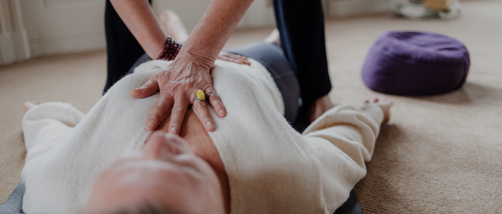

“Er is niets essentiëler voor onze gezondheid dan ademen”
Sessie weer in te plannen van af 4 september.
De adem is een cruciale sleutel voor een gezonder en energieker leven met meer rust en balans.
Samen kijken we naar wat er nodig is om jou:
Verschillende oefeningen en ademtechnieken worden ingezet. In een sessie werk ik met beweging, stretches, muziek, trigger points en energiewerk om je te begeleiden in jouw proces.
“De adem brengt dat wat vastzit weer in beweging zonder het verhaal”.
Veiligheid is een belangrijke waarde voor mij in mijn werk als ademcoach.

We werken in een ademsessie aan jouw persoonlijke vraagstukken.
Een 1e ademsessie duurt 2 uur en start met een kopje thee en intake. We praten vooraf over hoe het op dit moment met je gaat, je achtergrond, je fysieke, mentale en emotionele gezondheid. Ook onderzoeken we je adempatroon en gaan we je intentie bepalen; daar waar jij aan wil werken en je je adem voor wil openen. Daarna wordt de verbonden ademtechniek uitgelegd.
Het eerste half uur is het actieve gedeelte, daarna volgt 15-20 minuten integratie en ontspanning. Veel mensen ervaren dit als ultieme rust, vreugde, blijdschap en gelukzaligheid. We ronden de sessie af met ruimte om te bespreken wat je hebt ervaren.
Om een duurzame persoonlijke groei en verandering in te zetten kan je kiezen -zeer aan te bevelen-, voor een traject van 3 tot 5 sessies. Een vervolg sessie duurt 1,5 uur.
Wil jij graag die verbinding middels ademcoaching aangaan met je partner of goeie vriend (in)? dat kan. Een duo sessie duurt ongeveer 2 uur.
| Eerste 1 op 1 sessie | Een eerste 1 op 1 sessie neemt met intake en uitleg 2 uur in beslag |
|---|---|
| Vervolgsessie | Een vervolg sessie duurt 1,5 uur. |
| Duo sessie | Een duo sessie duurt ongeveer 2 uur. |
Indien je een afspraak moet afzeggen of verzetten, dan verzoek ik je dit minimaal 24 uur van tevoren door te geven. Afspraken die binnen 24 uur voor de geplande tijd worden afgezegd, zullen volledig in rekening worden gebracht.
Bij iedere les of sessie is het mijn doel om mensen een gevoel van ’thuis komen’ te geven. Heb je een vraag of wil je een afspraak maken? Neem gerust contact met mij op.